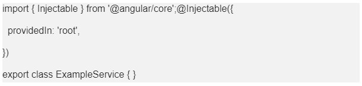

<div class="wrap">
    <mat-card>
        <mat-card-header>
            <div mat-card-avatar class="icon_avatar">
                <mat-icon>{{cardHead.icon}}</mat-icon>
            </div>
            <mat-card-title>{{cardHead.title}}</mat-card-title>
            <mat-card-subtitle>{{cardHead.subtitle}}</mat-card-subtitle>
        </mat-card-header>
        <mat-card-content>
            <p>
                En JavaScript hace referencia al alcance de accesibilidad que una variable tendrá en el código, es decir
                este decide a qué variables se tiene acceso en cada parte del código.
                <br>
                <br>
                Podríamos entonces decir que contamos con dos tipos de scope.
            </p>
            <p>
                <b>Scope Global: </b>Las variables que están declaradas fueras de funciones o bloques de códigos cuentan con Scope global,
                estas pueden ser accedidas desde cualquier parte de código, teniendo como limitación el nivel de
                privacidad para ser accedidas desde otras clases.
            </p>
            <p>
                <b>Scope Local: </b>Cuando una variable tiene limitado su acceso a una parte del código, por ejemplo, las variables
                declaradas dentro de una función.
            </p>

            <p>
                A nivel de clases los Scope definen también el nivel de accesibilidad una clase, cuando creamos una
                clase de tipo servicio la cual posiblemente debe ser un proveedor funciones para varias clases
                componentes que estén en distintos módulos , Angular nos permite definir el nivel de accesibilidad de
                esta clase proveedor de servicios, para entender mas esto tenemos que conocer los decoradores, los
                decoradores son un patrón de diseño estructural, que permite añadir comportamientos a un elemento, de
                esta manera angular puede interpretar que tipo de elemento estamos creando o usando. Las clases de tipo
                servicio una el decorador Injectable, este al mismo tiempo puede recibir como parámetro el nivel de
                accesibilidad, podemos tener un servicio que esté disponible para toda la aplicación, o podemos lo
                referenciar puntualmente en cada módulo que lo necesitemos
            </p>

            <p>Servicio disponible Globalmente</p>

            <mat-card-content>
                <div class="mapImg">
                    
                </div>
            </mat-card-content>

        </mat-card-content>
    </mat-card>
</div>